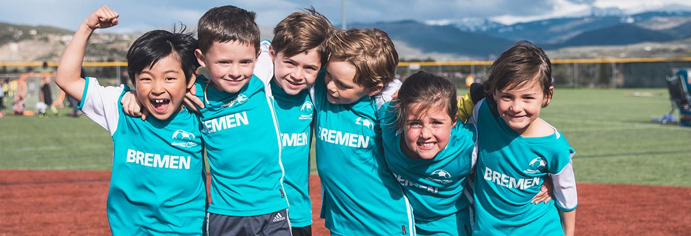

Ligas Juveniles

Importancia de las Ligas Juveniles
Las ligas juveniles desempeñan un papel crucial en el desarrollo de jóvenes futbolistas. Estas ligas ofrecen una plataforma para que los jugadores jóvenes adquieran experiencia y desarrollen sus habilidades en un entorno competitivo. Además, proporcionan una oportunidad para que los talentos emergentes sean observados por entrenadores y cazatalentos.
Ejemplos de Ligas Juveniles Destacadas
- La Liga Juvenil de España: Un campeonato que sirve como cantera para muchos clubes de primera división, como el Real Madrid y el FC Barcelona. Muchos jugadores famosos han comenzado sus carreras en esta liga.
- El Campeonato Juvenil de Inglaterra: Conocido por su alta calidad de formación y por ser una de las mejores plataformas para jóvenes futbolistas. Equipos como el Manchester United y el Chelsea tienen equipos juveniles muy competitivos.
- La Copa Libertadores Sub-20: Un torneo sudamericano que reúne a los mejores equipos juveniles del continente. Ofrece una oportunidad para que los jóvenes talentos brillen en el escenario internacional.
- La Major League Soccer (MLS) Next: Un sistema de ligas juveniles en Estados Unidos y Canadá que ayuda a desarrollar futuros jugadores para la MLS.
Beneficios de Participar en Ligas Juveniles
Participar en ligas juveniles ofrece varios beneficios, incluyendo:
- Desarrollo de Habilidades: Los jugadores pueden mejorar sus habilidades técnicas y tácticas al competir contra otros jóvenes de su edad.
- Experiencia Competitiva: Jugar en un entorno competitivo ayuda a los jóvenes a aprender a manejar la presión y a mejorar su rendimiento.
- Visibilidad: Los jugadores tienen la oportunidad de ser observados por cazatalentos y equipos profesionales, lo que puede llevar a oportunidades de carrera.
- Trabajo en Equipo: Las ligas juveniles fomentan el trabajo en equipo y la comunicación, habilidades esenciales para el éxito en el fútbol.
© 2024 Andre - Clase de Desarrollo Web